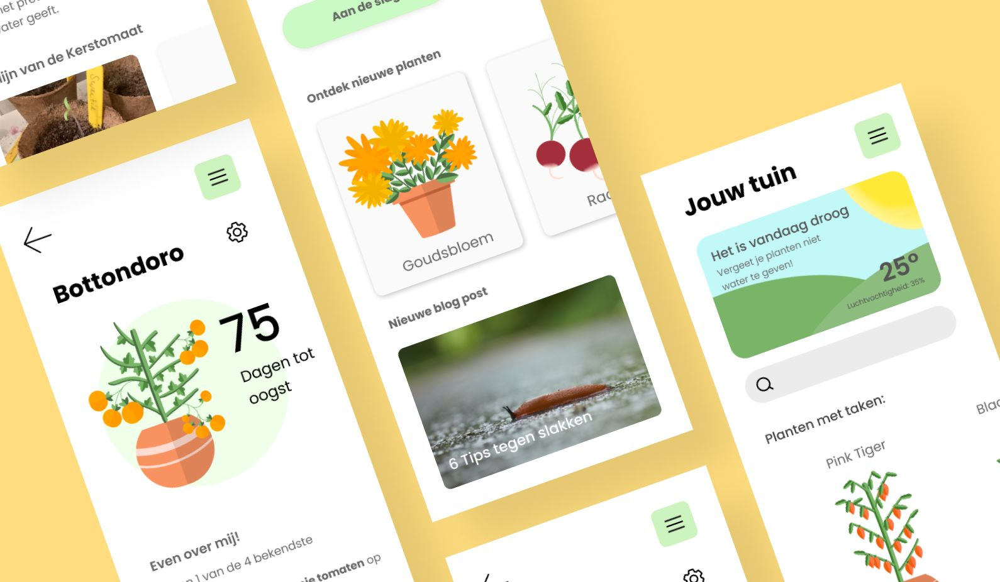
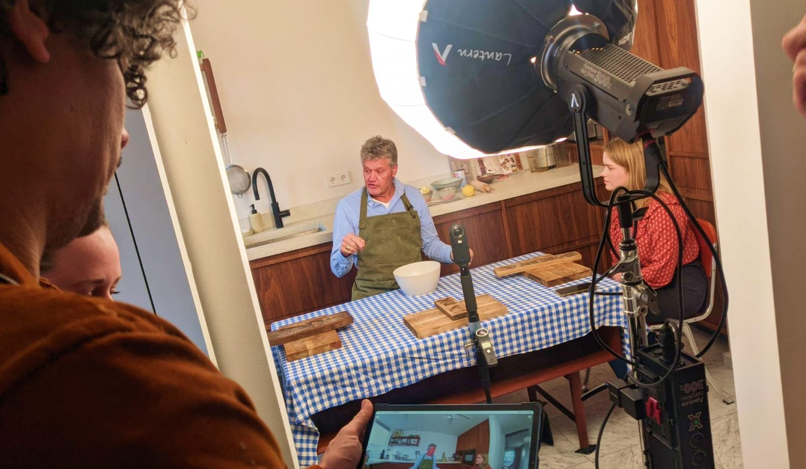

Mijn Moestuin
-
Type
UI/UX Design
-
Role
UI/UX Designer
-
Period
February 2021
-
Client
HvA CMD
Winner Golden Dot Awards 2021: Propedeuse Incentive Award
At CMD Amsterdam, we have the Golden Dot Awards every year. We were then nominated for and won the Propedeuse Encouragement Award.
During the Passion Project, we were tasked with developing a product/service that expressed our passion and allowed us to make an individual happy. We both had a passion for plants and the individual, Wilma, happened to have this as well. Wilma had a number of problems where she needed help in her garden and in doing so, we wanted to develop an app that could provide help with these problems. Our further goal was to make vegetable gardening even more fun!
Research
We did research by interviewing and observing the behaviour of our individual Wilma. She had different needs she wanted to know which plants wouldn’t take up much space in width but more in height, discover new plants and new recipes to use her harvest. She also had problems with snails and a new interest in small fruit trees as you can see many different things to keep in mind so we started sketching and prototyping.
First Sketches
Paper Prototype
Illustrations
Me and my teammate Esther both had a passion for illustration that we wanted to explore we decided to make the illustrations for the app for this reason. These are a view of the plants we illustrated.
Final Prototype
We went through many protoptypes after that from Lo-fi to Me-fi and Hi-fi, through testing and many rounds of peer feedback and expert reviews we came to this end-result. (The video is in dutch but you can still get an overview of the app).
Result
‘Mijn Moestuin’ is an app designed to make vegetable gardening more fun and easier. In ‘Mijn Moestuin’, you create your own digital garden, to which you can add plants. The app then helps you with various tasks. Think of how much water you should give your plants based on the weather. Furthermore, you get different tips, discover new plants, find cooking inspiration for your harvest and you can even keep a photo timeline of your plant's growth. In the end, we achieved an end result that was tailored to the needs and problems the individual had. We solved this with the various fun features. We also achieved our goal of giving a playful look to the app. We did this through illustrations, animations and fresh colors. Wilma, our user, was very satisfied with the end result and felt that the needs and problems she had were well listened to. A successful end result!
Feedback Valina Convent
"I find it clever how you, driven in your desire to create an app that supports the user in her vegetable gardening passion, have designed a product that actually matches the behavior and wishes of how the user gardens. You showed that you understand what is most important to her and incorporated that into the home screen and the whole further design of 'Mijn Moestuin'. You also made the design and animations in the style of Wilma and used the tools like Figma to achieve this. Independent, driven and user centred design."
Next Project >
EldersVR
An immersive 360 degree video for the elderly!